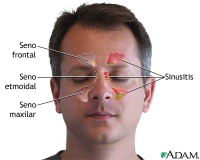

La sinusitis es la inflamación de la mucosa de los senos paranasales que puede ser causada
por un hongo, una bacteria o un virus, o bien por una alergia.

Aclaración de la foto superior:
Los senos paranasales son pequeños huecos llenos de aire; se dividen en senos frontales
(están en la parte frontal del cráneo, situados encima de la nariz, es decir, en la frente),
senos etmoidales (se sitúan en los laterales de la nariz, entre los huesos) y senos maxilares
(localizados en las mejillas).
Causas
Las causas más comunes son las siguientes:
Pólipos nasales. Estos crecimientos de tejido pueden bloquear los conductos nasales o los senos paranasales.
abique nasal desviado. Un tabique (la pared entre las fosas nasales) torcido puede restringir u
obstruir los conductos de los senos paranasales y empeorar los síntomas de la sinusitis.
Infecciones de las vías respiratorias. Las infecciones del aparato respiratorio, más comúnmente
los resfriados, pueden inflamar y engrosar las membranas de los senos paranasales y bloquear la
secreción de la mucosidad. Estas infecciones pueden ser provocadas por virus o bacterias.
Síntomas
Los sintomas más comunes son los siguientes:
Dolor y presión detrás de los ojos y en la zona maxilofacial.
Secreción y congestión nasal
Pérdida parcial o total del sentido del olfato.
Cefalea
Pruebas y exámenes
Para determinar los resultados, es posible que el médico te palpe la nariz y la cara para determinar
si sientes dolor y mirará dentro de la nariz. El médico generalmente puede hacer el diagnóstico
en función del examen físico.
Algunas pruebas son las siguientes:
Endoscopia nasal. Un tubo delgado y flexible (endoscopio) con una luz de fibra
óptica que se inserta a través de la nariz le permite al médico inspeccionar visualmente el
interior de los senos paranasales.
Pruebas de alergia. Si el médico sospecha que las alergias desencadenaron la sinusitis aguda,
te recomendará una prueba cutánea para alergias. Las pruebas cutáneas son seguras y rápidas, y
pueden ayudar a identificar el alérgeno que está causando los problemas nasales.
Tratamientos
El médico puede recomendar tratamientos para ayudar a aliviar los síntomas de la sinusitis, incluidos
los siguientes:
Corticoides nasales. Estos atomizadores nasales ayudan a prevenir y tratar la inflamación. Entre ellos,
se incluyen fluticasona (Flonase Allergy Relief, Flonase Sensimist Allergy Relief, otros), budesonida
(Rhinocort Allergy), mometasona (Nasonex) y beclometasona (Beconase AQ, Qnasl, otros).
Medicamentos para la alergia. Si la sinusitis se debe a alergias, los antialérgicos pueden ayudar
a disminuir los síntomas de alergia.
Expectativas
El pronóstico para la mayoría de los casos de sinusitis es bueno. Las infecciones de los senos nasales a
menudo desaparecen solas en una o dos semanas. Cuando no es así, la infección puede ser bacteriana y los
antibióticos pueden ayudar.